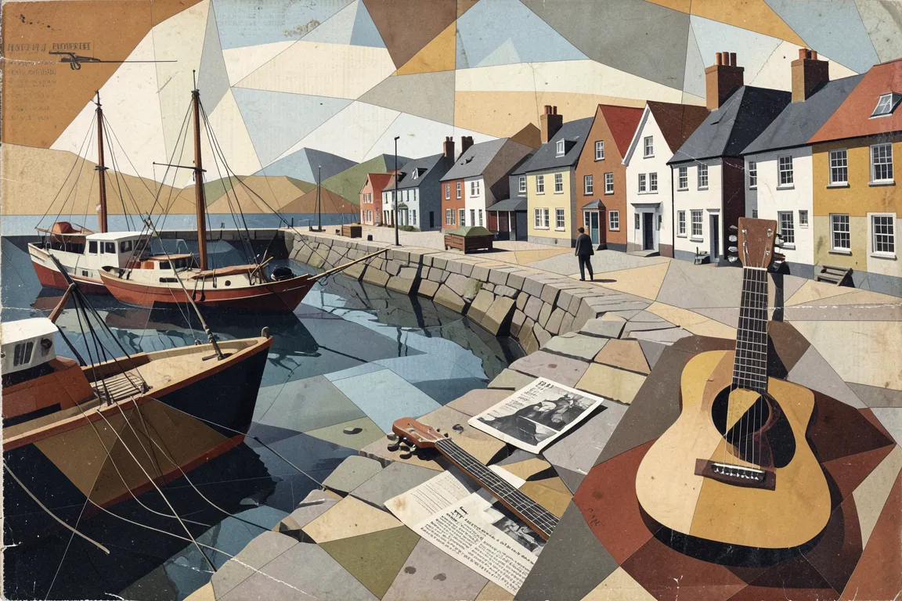

Et bilde som viser et objekt fra flere sider på én gang. Analytisk kubisme bryter motivet i fasetterte plan i en smal brun-grå toneart; syntetisk kubisme bygger det opp igjen av flate former, påklistret papir og lysere farge.

Kjerneidé
Et bilde er et objekt i egen rett, og det viser hva en ting er ved å kombinere flere synsvinkler på én flat overflate.
Designprinsipper
Bryt motivet i 20 til 60 plan med for det meste rette kanter, og vis hvert plan fra et ulikt synspunkt.
Hold rommet grunt: stable planene i 2 til 4 lag som lener seg fremover, og åpne aldri et dypt perspektiv.
I den analytiske fasen begrenses paletten til 3 til 4 fargetoner av oker, grått, brunt og oliven.
La konturen gå gjennom formen: la kantene åpne seg, slik at figur og bakgrunn bytter plass.
Sett et rutenett av vertikaler og horisontaler som armatur, og vipp planene 5° til 20° fra det.
I den syntetiske fasen brukes flate former i ren farge, og ekte tekstur legges til: påklistret papir, sand, en sjablongbokstav.
Velg et enkelt, nært motiv som står på et bord: en gitar, en flaske, et glass, en avis, et hode.
Antimønstre
Dypt sentralperspektiv med et gulv som viker bakover
Glatt modellering som vender en form som ett solid volum
Myke atmosfæriske kanter og blandet farge
Ett enkelt synspunkt og et fullt, uforvrengt ansikt
Sterke slagskygger fra én lyskilde
Sentimentale eller fortellende motiver som trenger en historie